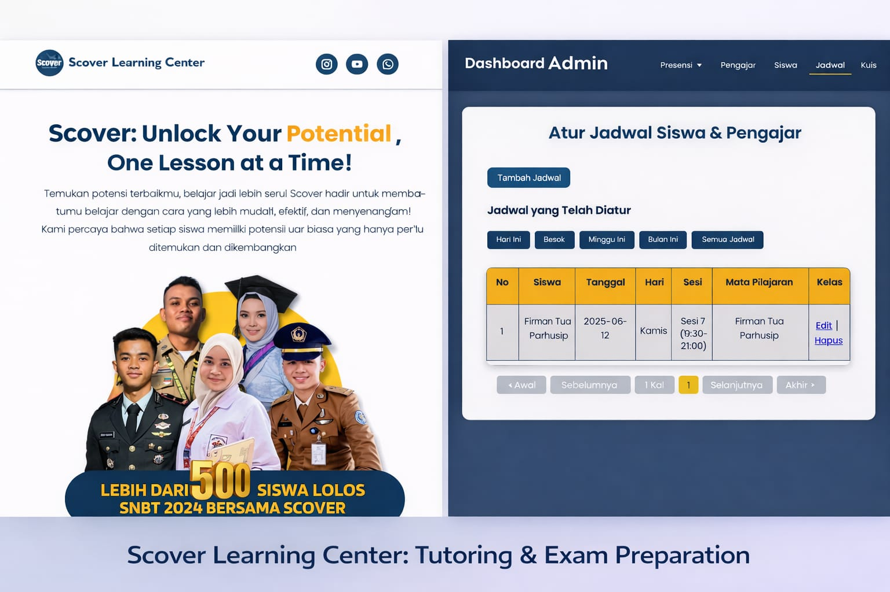

01
Fullstack Web Development
Learning Management System
Platform pembelajaran berbasis web yang dirancang untuk mendukung aktivitas belajar siswa dan pengelolaan pembelajaran oleh pengajar dalam satu sistem terintegrasi.
- — Dashboard terpisah untuk siswa, pengajar, dan admin
- — Pengelolaan materi dan aktivitas pembelajaran
- — Antarmuka responsif untuk mendukung akses pengguna
- — Integrasi frontend dengan backend dan database
- PHP Native
- JavaScript
- Bootstrap
- MySQL
View Project
Source Code — Private